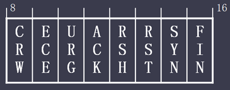

<!DOCTYPE html>
<html lang="zh-cn">
<head>
	<meta charset="UTF-8">
	<meta http-equiv="X-UA-Compatible" content="IE=edge,chrome=1">
	<title>协议-TCP</title>
	<script type="text/javascript" src="../../../js/public/head.js"></script>
	<script type="text/javascript">
		window.onload = createNavigation(tcp);
		document.onmouseup = function () {
			document.onmousemove = null;
		};
	</script>
	<link rel="stylesheet" type="text/css" href="../../../css/private/protocol/tcp.css">
</head>
<body>
	<div class="container-fluid">
		<div class="divProtocolWord">
			<script type="text/javascript">
				createProtocolWord(
					"TCP",
					"Transmission Control Protocol",
					"传输控制协议",
				);
			</script>
		</div><br class="both"/>

		<div id="divCommand">
			<script type="text/javascript">
				createInstruT0("TCP 首部字段说明","i1");
					createProtocolStructT0(
						"1000",
						"515",
						"7210",
						"TCP/TCP",
						"TCP协议"
					);

					let words = `
						源端口号（Source Port）
						由16 bits构成，表示发送端端口号

						目的端口号（Destination Port）
						由16 bits构成，表示接收端端口号

						序列号（Sequence Number）
						由32 bits构成，序列号是指发送数据的位置，每发送一次数据，就累加一次该报文数据部分字节数的大小<br />序列号的初始值在建立连接时随机生成，在建立连接和断开连接时发送的SYN和FIN虽然不携带数据，但也会使序列号增加一个字节

						确认应答号（Acknowledgement Number）
						由32 bits构成，指下一次应该收到的数据序列号，实际它指已收到确认应答号减1为止的数据，发送端收到这个确认应答后可以认为在这个序号之前的数据都已正常接收

						数据偏移（Data Offset）
						由4 bits构成，表示TCP所传输的数据部分应该从TCP包的哪个位开始计算，可以看作TCP首部的长度，单位为4字节，无选项字段的话，TCP首部为20字节长，数据偏移字段为5，TCP选项最大为40字节，所以该字段最大值为15

						保留（Reserved）
						由4 bits构成，为了以后扩展时使用，一般设置为0

						控制位（Control Flag）
						由8 bits构成，每一位从左到右分别为CWR、ECE、URG、ACK、PSH、RST、SYN、FIN，<br />这些控制标准也叫控制位，含义如下<br /><ul><li>CWR（Congestion Windows Reduced）<br/>CWR标志与ECE标志都用于IP首部的ECN字段</li><li>ECE（ECN-Echo）<br/>置为1会通知对方，从对方到这边的网络有拥塞，在收到数据包的IP首部中ECN为1时，将TCP首部中的ECE置为1</li><li>URG（Urgent Flag）<br/>表示报文中有需要紧急处理的数据，实际中很少使用</li><li>ACK（Acknowledgement Flag）<br/>确认应答的字段变为有效，TCP规定队了最初建立连接时的SYN包外，该位必须为1</li><li>PSH（Push Flag）<br/>表示接收端需要将收到的数据立刻传给上层应用协议，而不是先缓存，但接收端一般不予理会</li><li>RST（Reset Flag）<br/>表示TCP连接中出现异常必须强制断开连接</li><li>SYN（Synchronize Flag）<br/>用于建立连接，SYN为1表示希望建立连接，并在TCP首部的序列号字段进行初始值化</li><li>FIN（Finish Flag）<br/>表示今后不会再有数据发送，希望断开连接</li>

						保留（Reserved）
						由4 bits构成，为了以后扩展时使用，一般设置为0

						窗口大小（Window Size）
						由16 bits构成，单位字节，因此最大窗口为65535字节<br />表示接收方可以缓存对方发送的数据大小，但当前无论是网络还是设备均比协议制定之初有了大幅提高，在高速网络中，65535字节很快会被用完，从而无法发送数据，为了解决这个问题，增加TCP选项：窗口扩大因子，具体内容见TCP选项部分

						校验和（Checksum）
						由16 bits构成，计算TCP首部及数据，还可增加伪首部参与计算

						紧急指针（Urgent Pointer）
						由16 bits构成，该字段只有在URG位字段被设置时才有效。这个“指针”是一个必须要加到报文段的序列号字段上的正偏移，以产生紧急数据的最后一个字节的序列号。TCP的紧急机制是一种让发送方给另一端提供特殊标志数据的方法。但实际中使用很少

						选项（Options）
						长度可变，最多40字节，TCP选项结构如下<br /><br /><ul><li>类型（Kind）<br/>由8 bits构成，表示选项类型</li><li>长度（Length）<br/>由8 bits构成，单位字节，表示选项整体长度，包括kind，length以及选项内容</li><li>选项内容<br/>不同的选项，选项长度不固定</li></ul>

						填充（Padding）
						在有可选项的情况下，首部长度可能不是32 bits的整数倍，通过向字段填0，使首部长度变为32 bit的整数倍

						数据部分（Data）
						TCP数据部分
					`;
					createProtocolExplainT0(words, -515);

				createInstruT0("TCP 选项","i2");
					createInstruT1("常见TCP选项<br />","i2-1");
						let tHeader = [
							"类型<br />（kind）",
							"长度<br />（length）",
							"含义"
						];

						let tBody = [
							["0","-","表示选项列表结束（EOL）"],
							["1","-","用于填充（NOP）"],
							["2","4","最大报文段长度（MSS：Maximum segment size）"],
							["3","3","窗口扩大因子（Window Scale Factor）"],
							["4","2","允许选择确认支持选项（SACK Pemitted）"],
							["5","可变","允许选择确认支持选项（SACK）"],
							["19","18","md5 signature，用于BGP认证"],
						];
						createHLTableT1(730, tHeader, tBody, "tTCPoptions");

					createInstruT1("<br /><br />EOL（kind 0）","i2-2");
						createInstruAllTopT1("表示选项列表结束<br />");
						createConfigImgT1("TCP/kind0");
						createConfigImgT1("TCP/kind0_packet");

					createInstruT1("NOP（kind 1）","i2-3");
						createInstruAllTopT1("用于填充<br />");
						createConfigImgT1("TCP/kind1");
						createConfigImgT1("TCP/kind1_packet");

					createInstruT1("最大报文段长度，Maximum segment size（MSS）（kind 2）<br />","i2-4");
						createConfigImgT1("TCP/kind2");
						createInstruAllBottomT1("MSS值占用2字节，单位为字节，指单个TCP报文，数据部分的最大容量");
						createInstruAllBottomT1("理想状态下 = 路径MTU – 20 – 20（分别减去20字节的IP首部及TCP首部）<br />");
						createConfigImgT1("TCP/kind2_packet");

					createInstruT1("窗口扩大因子，Window Scale Factor（kind 3）<br />","i2-5");
						createConfigImgT1("TCP/kind3");
						createInstruAllBottomT1("TCP窗口由16 bits构成，单位字节，因此最大窗口为65535字节（64KB）");
						createInstruAllBottomT1("但当前无论是网络还是设备均比协议制定之初有了大幅提高，在高速网络中，64KB很快会被用完，从而无法发送数据，为了解决这个问题，增加TCP窗口扩大因子选项");
						createInstruAllBottomT1("发送的窗口大小为X，窗口扩大因子的移位数为Y，则实际窗口大小为");
						createConfigImgT1("TCP/kind3gs");
						createInstruAllBottomT1("Y的最大值为14，所以实际窗口最大为 65535 * 2<sup>14</sup> ≈ 1GB ，一个足够大的值");
						createInstruAllBottomT1("连接建立以后扩大因子是与方向绑定的/。主动打开连接的一方利用自已的SYN中发送该选项，被动打开连接的一方在接收到的SYN中指出该选项时才能发送/。每个方向的比例因子可各不相同/。如果主动打开连接的一方发送了一个非0的比例因子但却没有接收到来自对方的窗口缩放选项，它会将自已发送与接收的比例因子数值都设为0，这样使得系统不需要理解这些系统间的选项互操作");
						createConfigImgT1("TCP/kind3_packet");

					createInstruT1("允许选择确认支持，SACK Pemitted（kind 4）<br />","i2-6");
						createConfigImgT1("TCP/kind4");
						createInstruAllBottomT1("通过SYN或SYN+ACK包的TCP选项中包含该选项，表示支持选择确认<br />");
						createConfigImgT1("TCP/kind4_packet$1~2");

					createInstruT1("选择确认，SACK（kind 5）<br />","i2-7");
						createConfigImgT1("TCP/kind5");
						createInstruAllBottomT1("因TCP选项最多40字节，TCP序列号4字节，所以每组序号8字节，由于选项中还有各1字节的选项种类和选项长度，因此最多4组序号");
						createInstruAllBottomT1("发送序号0001~1000 —— 正常接收，暂无ACK");
						createInstruAllBottomT1("发送序号1001~2000 —— 中途丢失");
						createInstruAllBottomT1("发送序号2001~3000 —— 正常接收，发送ACK：1001，SACK：2001~3001<br />");
						createConfigImgT1("TCP/kind5_packet");

					createInstruT1("<br /><br />md5 signature（kind 19）","i2-8");
						createInstruAllTopT1("BGP启用认证时，存放用于认证的MD5值<br />");
						createConfigImgT1("TCP/kind19");
						createConfigImgT1("TCP/kind19_packet");


				createInstruT0("TCP连接的建立与终止","i3");
					createInstruT1("面向连接的协议","i3-1");
						createInstruAllTopT1("TCP是一个‘面向连接。的协议/。无论哪一方向另一方发送数据之前，都必须先在双方之间建立一条连接<br /><br />");

					createInstruT1("正常情况下的连接建立与终止","i3-2");
						createConfigImgT1("TCP/TCP连接建立与断开", "TCP连接建立与断开");

					createInstruT1("2MSL等待时间","i3-3");
						createInstruAllTopT1("MSL：Maximum SegmentLifetime，指的是一个TCP报文最大生成时间，不同系统不同");

						createInstruAllTopT1("RFC 793中指出MSL为2分钟，目前，系统实际设置的时间应该比这个短");

						createInstruAllTopT1("当TCP主动关闭并发送最后一个ACK后，该连接必须在TIME WAIT状态等待2倍MSL");

						createInstruAllTopT1("如果最后一个ACK意外丢失，还可以再次发送");

					createInstruT1("<br /><br />TCP一般由客户端主动关闭连接","i3-4");
						createInstruAllTopT1("主动关闭的TCP连接的一端会进入TIME WAIT状态等待2倍MSL，‘这个时间段内，多数系统不允许使用该端口。");

						createInstruAllTopT1("如果由客户端主动关闭，因为使用的是随机高端口，这个不能用，可以用其它端口建立新的连接");

						createInstruAllTopT1("但服务器使用的经典端口，这就意味着2倍MSL时间内，服务器无法提供服务");

					createInstruT1("<br /><br />同时开启连接","i3-5");
						createInstruAllTopT1("除几乎同时连接对方外，还需要端口也对应，很难实现");
						createInstruAllTopT1("　　客户端（10241）　-->　　服务器（80）");
						createInstruAllTopT1("　　服务器（80）　　　 -->　　客户端（10241）");
						createConfigImgT1("TCP/同时打开", "TCP同时开启连接");


					createInstruT1("<br /><br />同时关闭连接","i3-6");
						createConfigImgT1("TCP/同时关闭", "TCP同时关闭连接");

					createInstruT1("TCP状态迁移图","i3-7");
						createConfigImgT1("TCP/状态迁移图", "TCP状态迁移图");

				createInstruT1("<br />TCP伪首部","i4");
					createConfigImgT1("TCP/TCP伪首部", "TCP伪首部");

			</script>

			<br /><br /><br /><br /><br /><br /><br />
			<br /><br /><br /><br /><br /><br /><br />
		</div>
	</div>
</body>
</html>